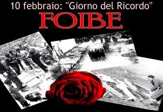

Foibe si intendono gli eccidi ai danni della popolazione italiana della Venezia Giulia e della Dalmazia, occorsi durante la seconda guerra mondiale e nell'immediato dopoguerra. Il nome deriva dai grandi inghiottitoi carsici dove furono gettati i corpi delle vittime, che nella Venezia Giulia sono chiamati, appunto, "foibe"
Per estensione i termini "foibe" ed il neologismo "infoibare" sono diventati sinonimi di uccisioni che in realtà furono in massima parte perpetrate in modo diverso: la maggioranza delle vittime morì nei campi di prigionia jugoslavi o durante la deportazione verso di essi.
Il fenomeno dei massacri delle foibe è da inquadrare storicamente nell'ambito della secolare disputa fra italiani e popoli slavi per il possesso delle terre dell'Adriatico orientale, nelle lotte intestine fra i diversi popoli che vivevano in quell'area e nelle grandi ondate epurative jugoslave del dopoguerra, che colpirono centinaia di migliaia di persone in un paese nel quale, con il crollo della dittatura fascista, andava imponendosi quella di stampo filo-sovietico, con mire sui territori di diversi paesi confinanti.
Vittime
Tipologia delle vittime
Tra i caduti figurano non solo personalità legate al Partito nazionale fascista, ma anche ufficiali, funzionari e dipendenti pubblici, insegnanti, impiegati bancari, sacerdoti, parte dell'alta dirigenza italiana contraria sia al comunismo, sia al fascismo, tra cui compaiono esponenti di organizzazioni partigiane o anti-fasciste, autonomisti fiumani seguaci di Riccardo Zanella, sloveni e croati anti-comunisti, collaboratori e nazionalisti radicali e semplici cittadini.
Modalità delle esecuzioni
Nelle foibe sono stati gettati cadaveri sia di militari che di civili. In alcuni casi, com'è stato possibile documentare, furono infoibate persone non colpite o solo ferite.
Sebbene quest'ultima modalità di esecuzione fosse, come già detto, solo uno dei modi con cui vennero uccise le vittime dei partigiani di Tito, nella cultura popolare divenne il metodo di esecuzione per eccellenza ed un simbolo del massacro.
In realtà la maggior parte delle vittime, date per infoibate, sono state inviate nei campi di concentramento jugoslavi dove molte furono uccise o morirono di stenti o malattia.
Quantificazione delle vittime
Nel dopoguerra e nei decenni immediatamente successivi non furono mai effettuate stime scientifiche del numero delle vittime, che venivano usualmente indicate in 15.000 (e talvolta aumentate fino a 30.000). Studi rigorosi sono stati effettuati solo a partire dagli anni novanta. Una quantificazione precisa è impossibile a causa di una generale mancanza di documenti. Il governo jugoslavo (e successivamente quello croato) non ha inoltre mai accettato di partecipare a inchieste per determinare il numero di decessi. Alcuni commentatori ritengono inoltre che una parte della documentazione sia tuttora secretata negli archivi, in particolare dell'ex Partito comunista italiano. Gli studi effettuati recentemente valutano il numero totale delle vittime (comprensive quindi di quelle morte durante la prigionia o la deportazione) come compreso tra poco meno di 5.000 e 11.000. Calcoli volumetrici eseguiti tenendo presente la profondità del pozzo prima e dopo la strage della Foiba di Basovizza hanno ipotizzato la presenza di oltre duemila vittime in quella sola foiba. Le salme effettivamente rinvenute di "infoibati" veri e propri finora sono circa un migliaio. Nell'uso comune, comunque, anche gli uccisi in altre circostanze legate all'avanzata delle forze jugoslave lungo il confine orientale italiano vengono considerati vittime o martiri "delle foibe".
Testimonianze
Furono poche le persone che riuscirono a salvarsi risalendo dalle foibe comunque tra questi Graziano Udovisi, Giovanni Radeticchio e Vittorio Corsi hanno raccontato la loro tragica esperienza a storici e/o emittenti televisive.
Questa testimonianza della primavera del 1945 fu pubblicata il 26 gennaio 1946 sul periodico della Democrazia Cristiana triestina La Prora, e poi riportata integralmente e anonimamente nell'opuscolo Foibe, la tragedia dell'Istria, edito dal CLN dell'Istria. A partire dall'inserimento della testimonianza in un libro di Giuseppe Bedeschi nel 1987, questa è stata poi varie volte ripresa dalla pubblicistica.
Anche le testimonianze degli scampati dalle foibe hanno causato delle polemiche politico-storiografiche: Pol Vice (pseudonimo di Paolo Consolaro) - un saggista di ispirazione marxista ed esponente di Rifondazione Comunista - ha sottoposto i testi ad una serrata critica, giungendo ad affermare che siamo in presenza di falsi testimoni. Il libro di Pol Vice è stato presentato dall'editore - Alessandra Kersevan - come parte di un progetto più ampio comprendente anche dei similari testi di forte critica di Claudia Cernigoi, e Daniela Antoni. La Kersevan - varie volte presentata dalla stampa come "negazionista" -ritiene che sulle foibe stia «funzionando una propaganda forsennata che ha come scopo preciso quello della rivalutazione del fascismo»: «un vero e proprio progetto mediatico di falsificazione della storia costruito ed imposto all’opinione pubblica dall'immediato dopoguerra ad oggi da forze politiche sociali ed economiche tuttora dominanti nel nostro Paese», anche grazie a «storici compiacenti» come Pupo e Spazzali, con la Democrazia Cristiana in testa nell'appoggio politico ai «neo irredentisti ex fascisti».